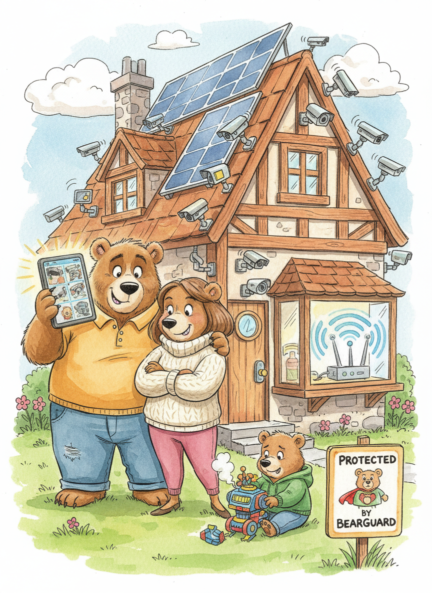

Meet the Bears
Once upon a time, in a cozy cottage deep in the woods, there lived three bears. But these were no ordinary bears. These were smart bears. Prepared bears. Bears who had read every online review for every home security system on the market.
There was great big Papa Bear, who worked in cybersecurity and took home defense very seriously. There was Mama Bear, who had a concealed-carry permit and could field-strip a water pistol in under thirty seconds. And there was wee little Baby Bear, who mostly just wanted to watch cartoons.
Their cottage had fourteen security cameras, motion-activated floodlights, a smart doorbell with facial recognition, and a Wi-Fi network so powerful that birds avoided flying over the house.
